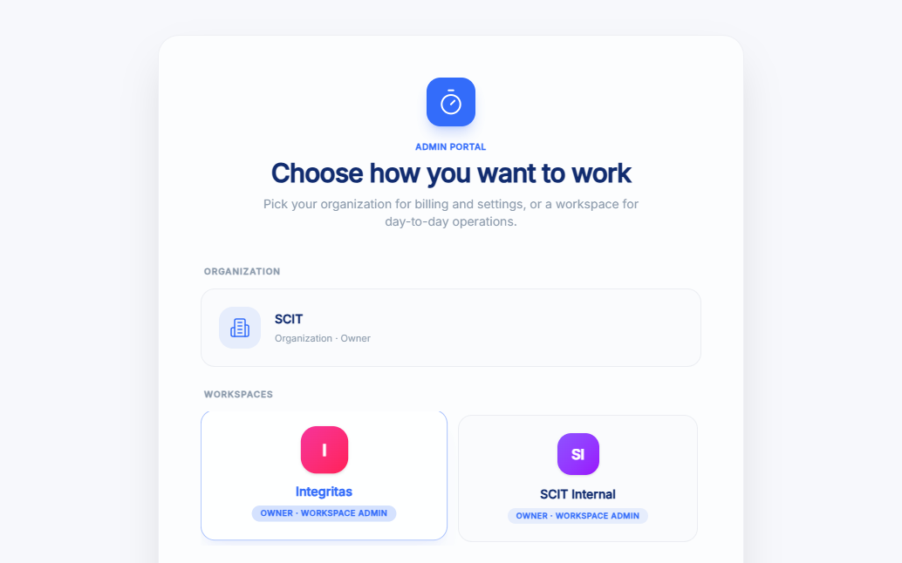
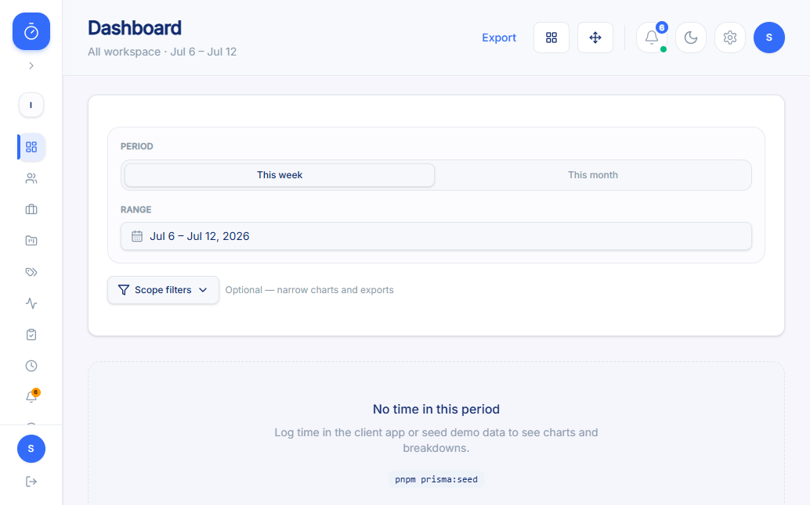
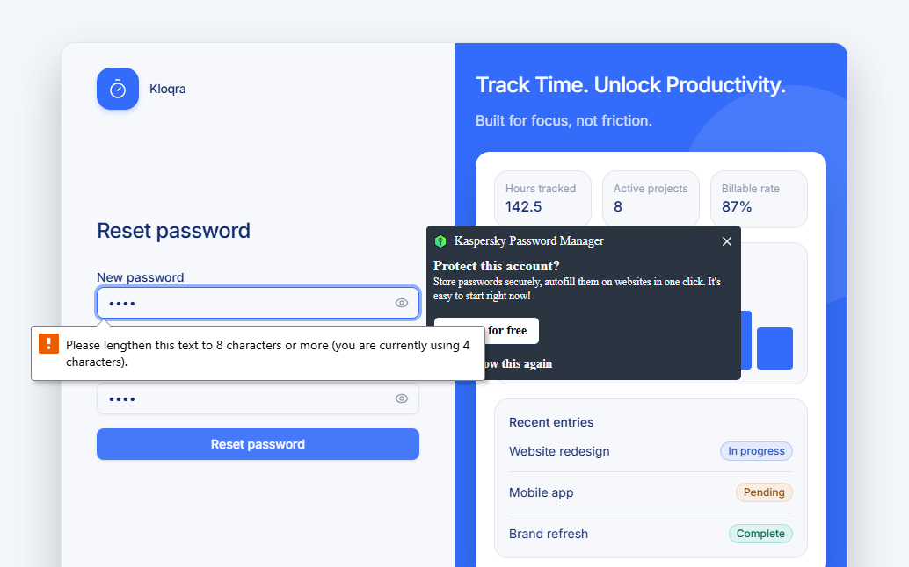

Follow-up QA pass targeting the Workspace Admin / Tenant Owner role — same acceptance criteria, second application, second execution of the full E2E QA workflow
| Artifact | Path |
|---|---|
| Acceptance criteria (shared with client-app run) | docs/qa/acceptance-criteria-login-forgot-password.md |
| Test plan (Step 2) | specs/admin-login-forgot-password.md |
| Exploratory results (Step 3) | specs/admin-login-forgot-password-exploratory-results.md |
| Automation suite (Step 4/5) | Test/admin-login-forgot-password/ |
| New defect (Step 6) | KAN-9 (label AI_Generated) |
| Updated defect (Step 6) | KAN-8 — cross-app confirmation comment added |
| Prior client-app run (for comparison) | specs/login-forgot-password.md, Test_Results/login-forgot-password.html |
The Login and Forgot Password screens are visually and structurally identical to the Client app (shared @kloqra/ui package) — so this pass focused on what actually differs for a Workspace Admin / Tenant Owner:
/select-context picker after login (not seen in the Member/client-app flow), before landing on a workspace dashboard.| ID | Scenario | Result | Notes |
|---|---|---|---|
| ADM-LGN-01 | Valid login → context picker | PASS | Redirected to /select-context (Organization + 2 workspaces) rather than straight to dashboard |
| ADM-LGN-02 | Selecting a workspace → dashboard with full Admin nav | PASS | Team Management, Billing, Exports, Workspace settings all present |
| ADM-LGN-03 | Wrong password → generic error | PASS | Single request, no redirect |
| ADM-LGN-04 | Unknown email → identical generic error | PASS | No enumeration |
| ADM-LGN-06 | Role-based nav (positive case) | PASS | Negative (Member) case not verified — no Member test account this run |
| ADM-LGN-08 | Empty-field validation | PASS | No API call fired |
| ADM-FPW-01 | Registered email → generic confirmation | PASS | Single request |
| ADM-FPW-04 | Weak password blocked client-side | PASS | No API call fired |
| ADM-FPW-03 | Reset with invalid token | DEFECT | See KAN-9 — page redirects to /login instead of showing the AC-17 error |



Standalone Playwright suite at Test/admin-login-forgot-password/, structured identically to the client-app suite plus a new SelectContextPage object.
Test/admin-login-forgot-password/ pages/ login.page.ts · forgot-password.page.ts · reset-password.page.ts · select-context.page.ts tests/ login.spec.ts · forgot-password.spec.ts playwright.config.ts, package.json, .env.example, README.md
[KAN-8 cross-app check] Enter-then-click must not double-submit /auth/reset-password test timed out (45s) waiting to click "Reset password" a second time./login immediately after the first (Enter-triggered) submit, before the follow-up click can ever fire — so the button the test was waiting for no longer exists on the page./login and explicitly test.skip()s with an annotation explaining it's blocked by KAN-9, instead of crashing with a misleading timeout.| Spec | Test | Result |
|---|---|---|
| login.spec.ts | successful login → context picker → workspace dashboard (Admin nav) | PASS |
| login.spec.ts | wrong password shows a generic invalid-credentials error, no redirect | PASS |
| login.spec.ts | unknown email shows the same generic error | PASS |
| login.spec.ts | empty submit shows client-side validation without calling the API | PASS |
| login.spec.ts | show/hide password toggle switches input type | PASS |
| login.spec.ts | forgot password link navigates to /forgot-password | PASS |
| login.spec.ts | sign-in via a single click fires exactly one /auth/login request | PASS |
| login.spec.ts | [KAN-8 cross-app check] Enter-then-click must not double-submit /auth/login | FAIL |
| forgot-password.spec.ts | [defect regression] invalid token shows AC-17 error without a silent-refresh redirect | FAIL |
| forgot-password.spec.ts | weak password is blocked client-side without an API call | PASS |
| forgot-password.spec.ts | reset via a single click fires exactly one /auth/reset-password request | PASS |
| forgot-password.spec.ts | [KAN-8 cross-app check] Enter-then-click must not double-submit /auth/reset-password | SKIPPED blocked by KAN-9 |
| forgot-password.spec.ts | registered email shows the generic confirmation message | PASS |
| forgot-password.spec.ts | unregistered email shows the same generic confirmation message | PASS |
| forgot-password.spec.ts | back to sign in link navigates to /login | PASS |
Severity: Critical Priority: High Label: AI_Generated
Impact: completely breaks the password-recovery flow for every Admin user whose reset link has expired or is invalid — precisely the users this feature exists to help. Reproduced twice, including from a fully clean browser session (no cookies/localStorage), ruling out leftover state as a precondition.
Root cause: the Reset Password form's 401 is handled by the same "authenticated" HTTP client wrapper used for in-app data (401 → silent refresh → redirect-to-login-on-failure), instead of the public/unauthenticated wrapper Login and Forgot Password correctly use.
Comment added, no severity/priority change
Re-ran the original client-app regression test against the Admin app's Login form: reproduces identically (2 requests from one Enter-then-click sequence) — confirmed as a shared-component bug affecting both apps. The Reset Password form's version of this check is currently blocked by KAN-9 (see Section 5) and will be re-verified once that's fixed.
| Category | Count | Detail |
|---|---|---|
| Acceptance criteria in scope | 22 (shared with client-app run) | docs/qa/acceptance-criteria-login-forgot-password.md |
| Admin-specific scenarios added | 3 | Context picker (ADM-LGN-01/02), role-based nav positive case (ADM-LGN-06) |
| Executed manually | 9 scenarios | See Section 3 |
| Automated | 15 scenarios (12 pass, 2 defect-proof fail, 1 blocked-and-annotated) | See Section 5 |
| Blocked (test data unavailable) | 5 scenarios | Member-role account for negative role check, 2FA, unverified email, forced password change, real email inbox access |